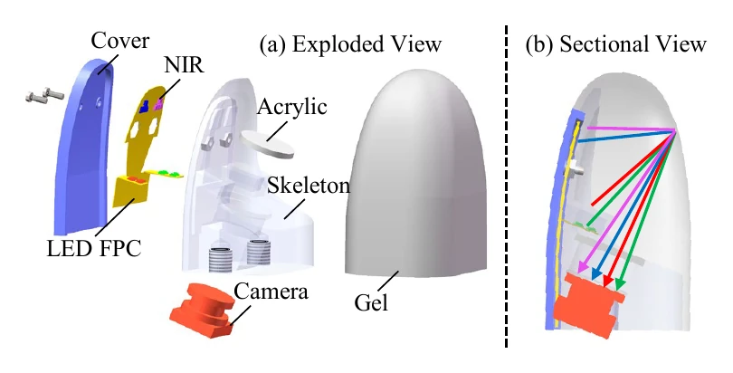
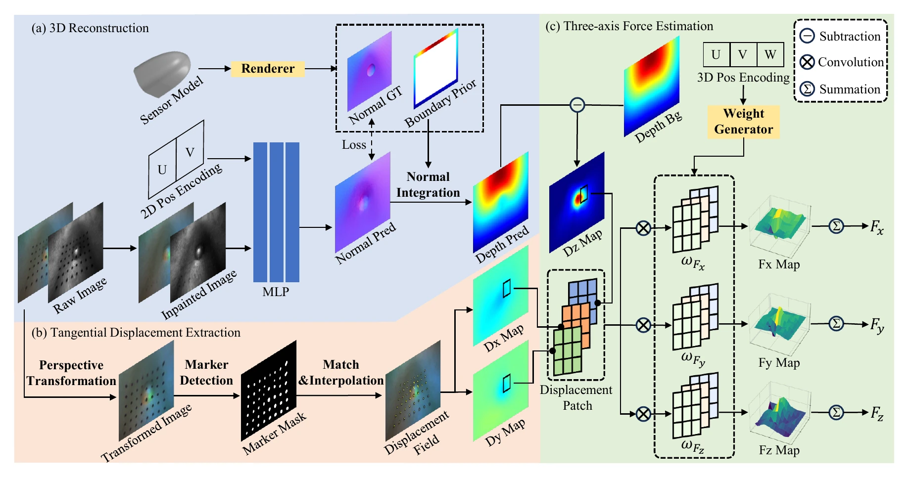
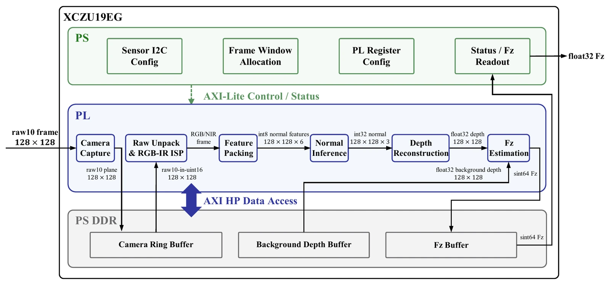
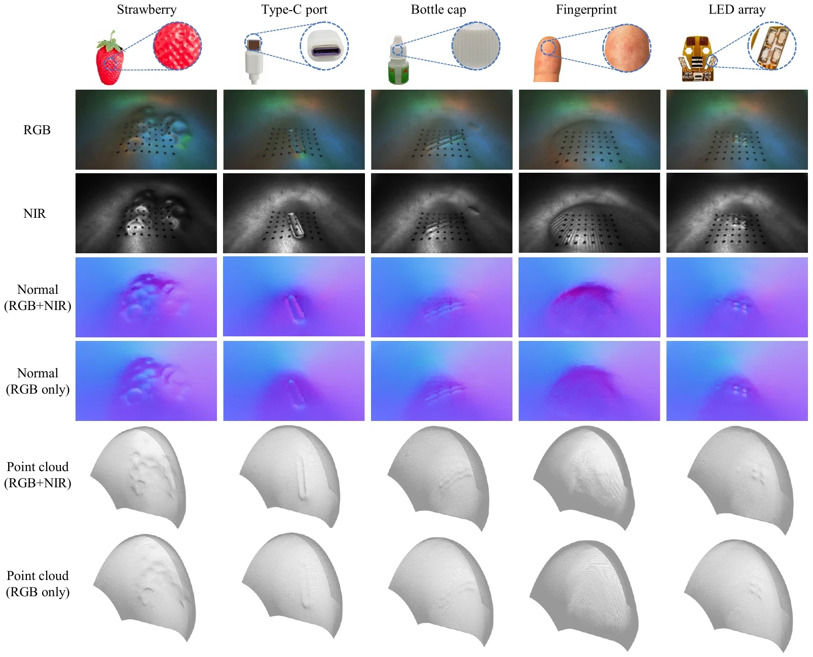
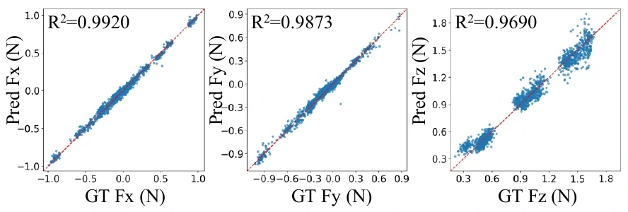
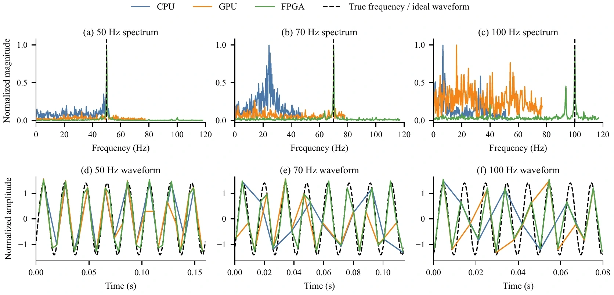

01 / Overview
Curved tactile geometry, force, and speed in one fingertip.
FasTac combines RGB-NIR multispectral imaging, curved-surface 3D reconstruction, position-aware 3-axis force estimation, and an FPGA image-to-normal-force pipeline for dexterous-hand integration.
RGB-NIR curved-surface reconstruction
Single-chip synchronous visible and near-infrared imaging improves photometric conditioning on high-curvature contact surfaces.
Position-aware HyperForce model
Dynamic convolution maps local 3D displacement fields to normal and tangential force under spatially nonuniform elastomer mechanics.
Deterministic tactile decoding
An FPGA pipeline integrates normal inference, depth reconstruction, displacement quantization, and Fz estimation at low latency.
02 / Sensor System
A compact RGB-NIR curved fingertip for dexterous manipulation.
The sensor uses a light-guiding fingertip skeleton, a multispectral LED FPC, a compliant gel skin, and a custom miniature camera module built around an OV2736 RGB-IR CMOS sensor.
Visible and near-infrared signals are captured from the same optical center, avoiding cross-camera registration while reducing sensor volume for fingertip integration.

03 / Method
From raw RGB-NIR images to shape, displacement, and force.
FasTac decodes contact through four-source photometric stereo, boundary-prior fast Poisson depth recovery, marker-based tangential displacement extraction, and HyperForce 3-axis force estimation.

01RGB-NIR acquisition
02Normal inference
03Depth reconstruction
04HyperForce
Edge Deployment
FPGA image-to-normal-force pipeline
The edge implementation maps the tactile decoding chain onto a PS-PL heterogeneous architecture. The PS side handles image synchronization, DDR frame buffering, DMA transfer, AXI-Lite control, and result readout, while the PL side performs normal inference, boundary-prior depth reconstruction, displacement quantization, and Fz accumulation.
The input image is cropped and downsampled to 128 x 128 for the FPGA path, balancing on-chip storage, throughput, and force-estimation accuracy. The current implementation operates at 150 MHz and reaches 1.09 ms latency for the complete image-to-normal-force pipeline.
RGB/NIR->
Normal->
Depth->
dz->
Fz

04 / Results
Fine 3D reconstruction, accurate 3-axis force, high-speed tactile output.
Experiments evaluate geometry accuracy, object-level reconstruction, 3-axis force prediction, force feedback grasping, and vibration measurement under CPU, GPU, and FPGA implementations.

3D reconstruction
RGB-NIR sensing preserves pits, slots, ridges, fingerprints, and miniature component layouts.

Force estimation
Predicted Fx, Fy, and Fz align with force-sensor ground truth.
Component NMAE values reach 2.37%, 2.41%, and 2.74%.

High-frequency decoding
The FPGA path supports continuous dynamic tactile measurement.
The image-to-Fz pipeline reaches 1.09 ms latency and approximately 918 Hz output.
Latency
Image-to-Fz platform comparison
FPGA energy values are Vivado estimates combined with scheduled RTL/HLS latency, not board-measured end-to-end energy.
05 / Demos
Contact-rich demonstrations across geometry, grasping, and vibration.
3D reconstruction
Multi-object curved-surface perception
Feedback grasping
Friction-aware closed-loop response
Vibration
High-frequency normal-force sensing
06 / Citation
Provisional citation for an unpublished manuscript.
FasTac is currently under review. The publication record and stable citation metadata will be updated after acceptance.
@misc{lu2026fastac,
title={FasTac: A Curved Vision-Tactile Sensor for High-Fidelity, High-Speed 3D Shape and Three-Axis Force Perception},
author={Lu, Xiaofan and Huang, Kaiji and Lin, Yuankai and Chen, Jiahui and Yang, Hua and Yin, Zhouping},
year={2026},
note={Manuscript under review}
}